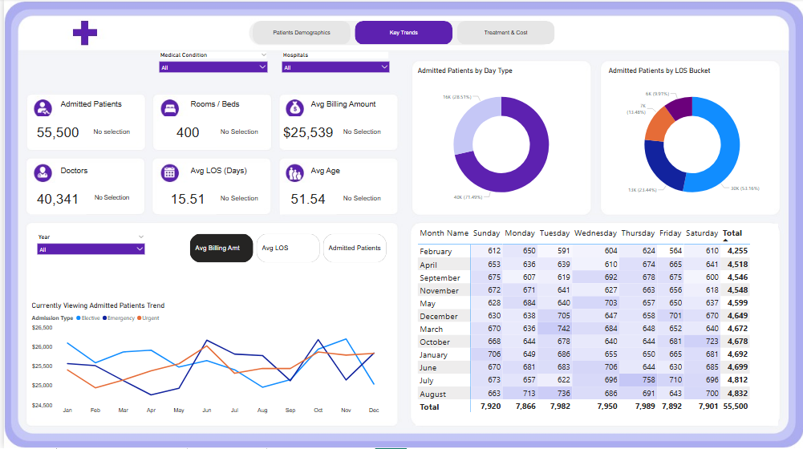

üè• Power BI Healthcare Data Analysis
Interactive Dashboard Demonstrating Advanced Power BI Skills
üìä Project Overview
This comprehensive healthcare analytics project showcases advanced Power BI capabilities through three interactive dashboard pages analyzing national healthcare data. The project demonstrates data modeling, DAX calculations, and professional visualization techniques.
üñºÔ∏è Dashboard Screenshots
1. Patient Demographics Dashboard

Comprehensive view of patient distribution by age group, blood type, and medical conditions with interactive bookmark navigation.
2. Key Trends Analysis
Temporal analysis of healthcare trends, admission patterns, and key performance indicators.
3. Treatment & Cost Analysis

Financial insights including billing amounts, treatment costs, and resource utilization metrics.
4. DAX Measures & Calculations

Custom DAX measures demonstrating advanced calculation capabilities.
üéØ Power BI Features Demonstrated
Data Modeling
Relationships, calculated columns, and optimized data structure
DAX Measures
Custom calculations, aggregations, and KPI formulas
Interactive Visuals
Charts, KPI cards, and custom visualizations
Navigation
Bookmark-based navigation and multi-page layouts
Filters & Slicers
Dynamic filtering across demographics and categories
Power Query
ETL processes and data transformation
üöÄ How to Explore
- Download the
.pbixfile using the button above - Install Power BI Desktop (free)
- Open the file and interact with all features
- Explore filters, slicers, and drill-through capabilities